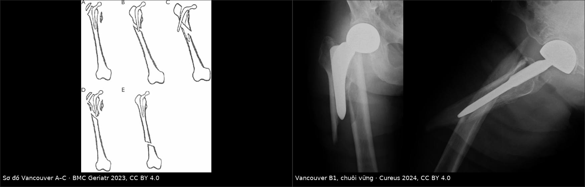
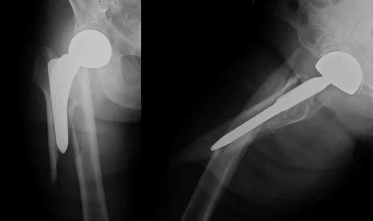

6155 — Gãy xương đùi quanh chuôi khớp háng nhân tạo: phân độ Vancouver & quyết định giữ chuôi hay mổ lại / Periprosthetic femoral fracture after THA
Tags: pattern:gay-xuong-quanh-implant pattern:long-chuoi pattern:di-lech-manh-xuong vung:khop-hang vung:co-xuong score:Vancouver score:UCS score:Baba protocol:X-quang-khop-hang protocol:CT-khop-hang incidentaloma:khong
Mức chắc chắn (certainty): tổng hợp y văn (literature synthesis) — số liệu lấy từ 2 bài tổng quan mở (PMC10929400, PMC11293929) + ca minh họa có ảnh CC BY; không có ca nguyên văn của nhóm.
1. Tổng quan bệnh học – cơ chế hình ảnh
- Định nghĩa: gãy xương đùi sát chuôi khớp háng nhân tạo (periprosthetic femoral fracture, PPFF), xảy ra trong mổ hoặc nhiều năm sau mổ. Đây là biến chứng thứ 3 sau thay khớp háng (sau lỏng vô khuẩn và nhiễm trùng) và chiếm ~18% các ca mổ lại khớp háng (National Inpatient Sample), với mức tăng 75% trong 2002–2014 — tăng nhanh hơn mọi nguyên nhân mổ lại khác.
- Tần suất (số đã công bố, khác nhau theo registry — phải ghi rõ nguồn khi trích):
- Thay khớp háng lần đầu, chuôi có xi măng: 0,8% ở 5 năm / 3,5% ở 10 năm (Cook, 6.458 ca).
- Scotland (52.136 ca lần đầu, 8.726 ca mổ lại): 0,9% và 4,2% ở 5 năm; 1,7% và 6,2% ở 10 năm (lần đầu / mổ lại).
- Mayo Clinic (5.417 ca mổ lại): xác suất tích lũy 1,9% (1 năm) → 3,8% (5 năm) → 6,4% (10 năm) → 11,4% (20 năm).
- Gãy trong mổ: 1,7% ở thay khớp lần đầu, 12% ở mổ lại.
- TẠI SAO gãy hay ở đúng mũi chuôi (stem tip)? Ba yếu tố cộng lại:
- Lệch mô-đun đàn hồi (modulus mismatch): titan ~110 GPa so với xương vỏ ~15–20 GPa → chuôi "cứng" nhận lực, còn xương ngay dưới mũi chuôi phải chịu tập trung ứng suất khi va đập/gập.
- Khiếm khuyết cơ học do phẫu thuật: lỗ khoan vỏ xương, xi măng tràn ra ngoài vỏ, khía vỏ khi lấy chuôi cũ = điểm khởi phát ứng suất (stress riser).
- Mất xương do phản ứng hạt (particle disease): đại thực bào tiêu xương quanh xi măng/chuôi → vỏ mỏng, mô xương yếu; lúc đó ngã thấp năng lượng cũng đủ gây gãy.
- TẠI SAO phim X-quang thường "sạch" mà vẫn gãy? Đường gãy không di lệch nằm ở vỏ trước hoặc vỏ sau xương đùi — trên cả phim thẳng (AP) và phim nghiêng (lateral), mặt phẳng vỏ đó gần như song song với chùm tia, nên khe gãy chỉ là một vệt mờ 0,5–1 mm bị chuôi kim loại và xi măng che. Chỉ mặt phẳng cắt ngang (axial) mới thấy vỏ xương bị đứt theo chu vi → CT là công cụ "nhìn vuông góc" với đường gãy.
- TẠI SAO CT đọc được độ vững của chuôi: lỏng chuôi biểu hiện bằng đường sáng quanh chuôi/xi măng rộng ra, xi măng nứt, chuôi lún (subsidence) — cả ba đều là thay đổi theo thời gian, nên giá trị nằm ở so sánh với phim ngay sau mổ đo trên cùng mặt phẳng, không phải một con số tuyệt đối trên một phim.
2. Mẫu hình + chẩn đoán phân biệt theo vị trí (Gamut)
- Theo tương quan đường gãy – chuôi (Vancouver):
- A — vùng mấu chuyển: AG (mấu chuyển lớn) / AL (mấu chuyển nhỏ).
- B — quanh chuôi hoặc ngay dưới mũi chuôi: B1 chuôi vững; B2 chuôi lỏng, xương còn tốt; B3 chuôi lỏng, xương mất nhiều.
- C — dưới hẳn mũi chuôi, xương đùi lành giữa ổ gãy và chuôi.
- Theo hệ mở rộng UCS 2014 (dùng khi tổn thương vượt khỏi khớp háng): thêm D (thân xương đùi giữa 2 implant háng–gối), E (gãy cả xương đùi và ổ cối), F (chỉ ổ cối).
- Các thể "bắt chước phân độ A" — thực chất là B2 (bẫy kinh điển): gãy mấu chuyển nhỏ kèm một đoạn vỏ xương đùi phía trong (pseudo-ALT) hoặc gãy mấu chuyển lớn kèm đoạn vỏ phía ngoài (pseudo-AGT) → chuôi đã mất điểm tựa và phải xử trí như B2 (mổ lại chuôi), không phải chỉ nẹp mấu chuyển.
- Gamut theo cơ chế khi "gãy quanh implant" mà phim không rõ:
- Lỏng vô khuẩn (đường sáng tiến triển, không gãy) — xem bài 6140.
- Nhiễm trùng quanh implant (PJI) — gãy có thể là biến chứng của nhiễm; tỷ lệ nhiễm sau PPFF 7,3%, nên mọi ca mổ lại đều phải có CRP/ESR ± chọc hút trước khi gọi là "gãy đơn thuần" — xem bài 6110.
- Gãy bệnh lý qua ổ tiêu xương/di căn — bờ gãy không đều, có khối mô mềm, tiền sử ung thư.
- Vỡ mấu chuyển đơn thuần do ngã ở người già chưa thay khớp (không phải PPFF) — chỉ cần phân biệt khi chưa biết tiền sử.
3. Bảng so sánh phân biệt (ma trận đối chiếu)
| Thực thể (entity) | Hình ảnh điển hình | Chốt vào (rule-in) | Chốt loại (rule-out) | Gợi ý xác nhận |
|---|---|---|---|---|
| Vancouver A (AG/AL) | Gãy mấu chuyển lớn/nhỏ, đường gãy không lan vào vùng quanh chuôi, chuôi không lún | Mấu chuyển di lệch > 2 cm = chỉ định mổ; < 2 cm thường điều trị bảo tồn | Đường gãy lan xuống vỏ trong/ngoài → thực chất pseudo-ALT/AGT = B2 | So phim cũ + CT xác nhận vỏ xương còn liên tục |
| Vancouver B1 | Gãy quanh chuôi/mũi chuôi, chuôi không lún, không đổi tư thế, xi măng còn liền, xương còn tốt | Chuôi vững trên phim so với phim ngay sau mổ + không có đường sáng mới | Lún ≥ 2 mm, xi măng nứt, chuôi xoay → B2/B3 | CT + nghiệm pháp độ vững trong mổ (mở khớp kiểm tra) |
| Vancouver B2 | Gãy quanh chuôi + chuôi lỏng, xương đùi còn đủ để giữ chuôi dài | Lún/xoay chuôi + đường sáng tiến triển + xương còn tốt → mổ lại chuôi dài | Xương mất nhiều (vỏ < mức cần thiết để chuôi dài bám) → B3 | CT 3 mặt phẳng; phân độ Baba/UCS; cấy dịch khi mổ |
| Vancouver B3 | Như B2 nhưng mất xương chu vi nhiều, vỏ mỏng, có khi chỉ còn vỏ sau | Mất xương lên tới dưới mấu chuyển nhỏ + chuôi lỏng → chuôi dài + ghép xương/khối thay đầu trên | Xương còn tốt, chỉ cần nẹp → B1 | CT đánh giá vỏ; Paprosky; chuẩn bị allograft/khối thay |
| Vancouver C | Gãy dưới mũi chuôi, xương đùi giữa ổ gãy và chuôi nguyên vẹn | Khoảng xương lành ≥ 1 đường kính thân xương giữa chuôi và ổ gãy | Đường gãy chạm mũi chuôi → B | Phim đủ dài tới khớp gối |
| PJI (bắt chước) | Đau + đường sáng quanh chuôi ± gãy; có thể phim gần bình thường | CRP/ESR tăng + chọc hút dương (theo MSIS/ICM) | CRP/ESR bình thường + dịch vô khuẩn không loại trừ PJI mạn | Chọc hút trước khi mổ; cấy 5–6 mẫu mô |

Trái: sơ đồ Vancouver A / B1 / B2 / B3 / C. Phải: chuôi háng nhân tạo + gãy quanh chuôi B1 (chuôi vững) trên phim thẳng và nghiêng. Ảnh ghép letterbox, không crop/kéo giãn. Nguồn: BMC Geriatr 2023 (PMC10557259), CC BY 4.0 và Cureus 2024 (PMC11055707), CC BY 4.0.Đọc phân độ cho đúng: 3 con số phải nhớ
- Độ tin cậy của Vancouver so với "sự thật trong mổ": đồng thuận 81%, κ = 0,68; nhưng khi chỉ dựa vào phim trước mổ, bác sĩ đánh giá THẤP độ lỏng chuôi (gọi B1 trong khi mổ thấy lỏng) — đây là lý do bài này tồn tại.
- Với chuôi không xi măng, phân biệt B1 với B2/B3 chỉ đạt κ = 0,45 (đồng thuận trung bình).
- Khi bổ sung CT + thông tin implant, hệ Baba đạt κ = 0,94 giữa người đọc và 95% khớp với phát hiện trong mổ — cao hơn hẳn Vancouver trên phim.
4. Protocol chụp + hệ phân độ/điểm
- X-quang (bắt buộc, là bước 1): khung chậu thẳng + háng thẳng/nghiêng + toàn bộ xương đùi tới khớp gối ở bên đau (bỏ sót gãy C và gãy quanh gối cùng bên nếu chỉ chụp háng). Luôn so với phim ngay sau mổ để đo lún/xoay chuôi.
- CT (khi phim không kết luận, khi dự kiến mổ lại, hoặc đau sau ngã mà phim sạch): lát 0,5–1,25 mm, tái tạo đa bình diện (MPR), có giảm nhiễu kim loại (MAR); đọc 4 điểm: (1) vỏ xương đứt theo chu vi; (2) xi măng nứt; (3) chuôi lún/xoay so với phim cũ; (4) ổ cối cùng bên (gãy ổ cối ẩn đã được báo cáo kèm PPFF).
- Không có ngưỡng mm được thẩm định cho "xương tốt vs xương kém" (B2 vs B3) — quyết định dựa trên chiều dày vỏ, mức tiêu xương, chiều dài đoạn xương lành còn bám chuôi; ghi rõ "chưa có ngưỡng thống nhất" thay vì bịa số.
- Nguyên tắc xử trí (theo phân độ): A → bảo tồn nếu di lệch nhỏ, mổ nếu > 2 cm; B1 → nẹp + vít/cable (hoặc mổ lại chuôi dài); B2 → mổ lại chuôi bám thân xương (chuôi dài ≥ 2 đường kính vỏ xương vượt qua ổ gãy); B3 → mổ lại + xử lý mất xương (ghép xương đầm, mảnh ghép vỏ, khối thay đầu trên); C → nẹp.
- Số liệu chọn lựa: trong y văn tổng hợp, 86,8% B2 (298/343) và 95,8% B3 (160/167) được mổ lại chuôi — tức với B2/B3, "chỉ nẹp" là ngoại lệ. Với chuôi xi măng trơn (polished taper-slip), một số nghiên cứu cho thấy nẹp có tỷ lệ mổ lại thấp hơn, chờ mổ ngắn hơn, ít truyền máu hơn so với mổ lại chuôi → không có một công thức duy nhất cho mọi chuôi B.
- Kết cục để tư vấn (số tổng hợp): tử vong 30 ngày 3,3% · 90 ngày 4,8% · 1 năm 13,4% (4.841 bệnh nhân/35 nghiên cứu); nhóm nguy cơ cao (nam, ≥ 75 tuổi, ASA ≥ 3) 9% / 21% / 60% ở 90 ngày / 1 năm / 5 năm. Biến chứng sau mổ lại ~17,8%, mổ lại lần nữa 10,5–14,4%, trật khớp 5–16% và trật khớp sau mổ lại làm tăng 5 lần tử vong trong năm đầu.
flowchart TD
A[Gãy xương đùi quanh chuôi háng] --> B{Đường gãy ở đâu?}
B -->|Mấu chuyển lớn/nhỏ| C{Di lệch > 2 cm?}
C -->|Không| C1[Bảo tồn, tập chịu lực]
C -->|Có| C2[Nẹp mấu chuyển]
B -->|Quanh chuôi hoặc ngay dưới mũi| D{Chuôi còn vững? So phim cũ + CT}
B -->|Dưới hẳn mũi chuôi| E[Nẹp xương đùi - Vancouver C]
D -->|Vững| F[Vancouver B1: nẹp ± cable]
D -->|Lỏng| G{Xương còn đủ để giữ chuôi dài?}
G -->|Còn| H[Vancouver B2: mổ lại chuôi dài qua ổ gãy ≥ 2 đường kính vỏ]
G -->|Không| I[Vancouver B3: mổ lại + ghép xương / khối thay đầu trên]
F --> J{CRP/ESR + chọc hút dương?}
H --> J
I --> J
J -->|Có| K[Điều trị như nhiễm: mổ 1 thì/2 thì + kháng sinh]
J -->|Không| L[Phục hồi chức năng sớm, chịu lực theo cấu tạo]
5. Biến thể bình thường và cạm bẫy
- Đường sáng quanh chuôi ≤ 1 mm, không tiến triển, ở chuôi không xi măng là hình ảnh chấp nhận được — không gọi là lỏng nếu không có lún/xoay và không có triệu chứng.
- Cạm bẫy 1 — "B1 trên phim, B2 trong mổ": phim trước mổ đánh giá thấp độ lỏng (κ 0,45 với chuôi không xi măng); dấu tinh tế là chuôi lún vào vòng định tâm (centralizer), thay đổi so với phim cũ. Khi nghi ngờ, chuẩn bị sẵn phương án mổ lại chuôi.
- Cạm bẫy 2 — gãy mấu chuyển nhỏ "đơn thuần": nếu kèm một đoạn vỏ xương đùi phía trong (pseudo-ALT) thì chuôi đã mất tựa → nẹp mấu chuyển sẽ thất bại; cần CT/MRI để thấy đoạn vỏ.
- Cạm bẫy 3 — bỏ sót gãy thứ hai: gãy quanh chuôi hay đi kèm gãy ổ cối ẩn cùng bên hoặc gãy xương đùi bên đối diện; đọc CT phải xem toàn khung chậu, không chỉ vùng đau.
- Cạm bẫy 4 — thoả mãn tìm kiếm (satisfaction of search): thấy đường gãy rõ ở thân xương là dừng, bỏ qua đầu trên chuôi bị xoay/lún — chính là thứ quyết định B1 hay B2.
- Cạm bẫy 5 — gọi "gãy do ngã" mà bỏ qua nhiễm: tỷ lệ nhiễm sau PPFF 7,3%; mổ lại trên nền nhiễm mà không biết sẽ mất chuôi.
6. Tự lượng giá — Blind Quiz
Ca 1 — Cụ bà lớn tuổi, đau đùi sau ngã tại nhà, đã thay khớp háng nhiều năm trước.

- Câu hỏi: (1) Mô tả đường gãy và vị trí so với chuôi. (2) Phân độ Vancouver? (3) Dấu hiệu nào trên phim giúp nói chuôi còn vững, và bước tiếp theo cần làm?
Bấm để hiện đáp án (findings + chẩn đoán)
- Dấu hiệu: đường gãy chéo ở thân xương đùi ngay dưới mấu chuyển, quanh chuôi; chuôi không lún, không đổi tư thế, không thấy xi măng nứt; không có gãy ổ cối.
- Chẩn đoán: Vancouver B1 (chuôi vững, xương còn tốt) → hướng nẹp + vít/cable, giữ chuôi.
- Bước tiếp theo: so phim ngay sau mổ để loại lún/xoay; nếu phim mờ hoặc đau không tương xứng → CT có MAR; và CRP/ESR ± chọc hút trước khi mổ.
- Phản biện: ca này được báo là B1 theo chú thích gốc, nhưng vì Vancouver trên phim đánh giá thấp độ lỏng, xác nhận cuối cùng vẫn là nghiệm pháp độ vững trong mổ.
- Nguồn ảnh: Cureus 2024 (PMC11055707), CC BY 4.0.
Ca 2 — Cùng bệnh cảnh, nhưng phim chỉ có "đường sáng quanh chuôi" và bệnh nhân đau nhiều hơn sau 6 tháng.
- Câu hỏi: (1) Nếu không có đường gãy rõ mà chuôi lún 4 mm so với phim cũ, xếp vào phân độ nào? (2) Vì sao không thể gọi "B1" chỉ vì phim không thấy gãy? (3) Khi nào cần CT?
Bấm để hiện đáp án (findings + chẩn đoán)
- Trả lời: lún chuôi + đường sáng tiến triển = chuôi lỏng → nếu xương còn tốt là B2, nếu mất xương nhiều là B3; không phải B1 dù không thấy đường gãy rõ.
- Vì sao: Vancouver phân loại theo 3 trục: vị trí – độ vững chuôi – chất lượng xương; "không thấy gãy" chỉ là trục vị trí, không nói gì về độ vững.
- CT khi: phim không kết luận, chuẩn bị mổ lại (đo chiều dài đoạn xương lành, phát hiện gãy ẩn vỏ trước/sau), hoặc nghi gãy ổ cối cùng bên.
- Nguồn ảnh: sơ đồ BMC Geriatr 2023 (PMC10557259), CC BY 4.0; ảnh phải Cureus 2024 (PMC11055707), CC BY 4.0 (ghép letterbox).
Bài liên quan chéo
- 6140 – Lỏng vô khuẩn quanh khớp háng nhân tạo
- 6110 – Nhiễm trùng quanh khớp nhân tạo sau thay khớp háng
- 6141 – Vôi hóa lạc chỗ quanh khớp háng nhân tạo
- 6107 – Thay khớp háng ở người sống sót ung thư nhi
- 300 – Tổng quan hệ Cơ – Xương – Khớp
Không dùng để chẩn đoán độc lập khi chưa có người hướng dẫn.